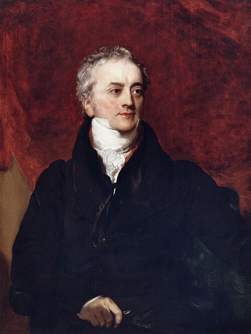

物理・宇宙
スリットを2本にするだけで、粒子は波のように振る舞い始める。しかし「どちらを通ったか」を確かめた瞬間、その振る舞いは消える。200年前に始まった問いは、いまだに閉じていない。
トマス・ヤングが光の干渉に関する論文を王立協会に提出。光の波動性を実証した。
同年、ガウスが『整数論の研究』を出版。ピアッツィが初の小惑星ケレスを発見。英愛連合王国が成立。
2002年、Physics World誌の読者投票で「物理学史上最も美しい実験」に選出された。
夜、暗い部屋で懐中電灯をつける。壁に小さな穴が開いていて、光がそこから漏れる。光は穴の正面にまっすぐ届くはずだ——そう思う。
でも実は、光は穴を通った先で少し広がる。壁に落ちる影の境界がくっきりではなく、ぼんやりしているのを見たことがあるだろう。穴が十分に小さいと、光は「まっすぐ進む粒」ではなく「広がる波」のように振る舞い始める。
この「広がり」こそが、物理学を200年以上悩ませている問題の入り口だ。
水面の波のシミュレーションで干渉の仕組みを確かめ、あなた自身の予想を立ててから、粒子が1発ずつスクリーンに到達する様子を体験する。
この記事は量子物理学の話だが、最初にひとつだけ言葉を整理しておきたい。この先何度も出てくる「スリット」という単語——日本語にすれば「細い切れ込み」だ。薄い板にカッターで縦に切れ目を入れたものを想像してほしい。光や粒子をそのスリットに向けて飛ばし、板の向こう側で何が起きるかを観察する。それがこの実験の基本構造だ。
単スリット — 横から見た図
板に切れ込みが1本
単スリット — 正面から見ると
中央に細い隙間
二重スリット — 横から見た図
板に切れ込みが2本
二重スリット — 正面から見ると
隙間が上下に2つ
1672年、アイザック・ニュートンはプリズムで太陽光を分解し、光は小さな粒子の流れだと主張した。光が直進すること、鋭い影を作ることが根拠だった。当時の物理学界ではこの「粒子説」がほぼ定説になった。ニュートンの権威が絶大だったからだ。
しかし同時代のクリスティアーン・ホイヘンスは、光は波だと考えた。水面の波のように空間を伝わる振動——それが光の正体だという「波動説」だ。ホイヘンスの主張は正しかったが、100年以上にわたって傍流に留まった。

トマス・ヤング
Thomas Young (1773–1829)
イギリスの博学者。医師、物理学者、エジプト学者。1801年に光の干渉現象を王立協会に報告し、ニュートンの粒子説に挑戦した。ロゼッタ・ストーンの解読にも貢献。「世界で最後の万能人」と呼ばれることがある。
1801年、ヤングは暗室に太陽光を引き込み、極めて細い隙間を2本並べた板に通した。壁に映ったのは2本の光の帯ではなかった。明暗の縞模様——干渉干渉 2つの波が重なり合って強め合い・打ち消し合いが起きる現象。縞と呼ばれるパターンだった。これは光が波でなければ説明できない現象だった。
"We choose to examine a phenomenon which is impossible, absolutely impossible, to explain in any classical way, and which has in it the heart of quantum mechanics."
「われわれは、古典的な方法では絶対に——まったく絶対に——説明できない現象を取り上げる。そしてそこに量子力学の核心がある。」
— リチャード・ファインマンリチャード・ファインマン アメリカの理論物理学者（1918–1988）。量子電磁力学の発展に貢献。ノーベル物理学賞（1965年）。, The Feynman Lectures on Physics, Vol. III, 1965
ヤングの発見は当初、ほとんど無視された。エディンバラ・レビュー誌の匿名書評はヤングを「無知で横柄」と切り捨てた。ニュートンに逆らうことは、当時のイギリスでは異端に近かった。しかし、光が干渉するという事実は消えなかった。波でなければ説明がつかないからだ。
✗ よくある誤解
「観測」とは人間が目で見ること
✓ 実際は
検出器が情報を記録した時点で「観測」は成立する。人間の意識は量子力学的な結果に無関係だ。
✗ よくある誤解
粒子が2つに分裂して両方のスリットを通る
✓ 実際は
粒子は分裂しない。粒子を記述する波動関数が両方のスリットを通過し、干渉を起こす。
✗ よくある誤解
意識が量子力学に影響を与える
✓ 実際は
干渉を壊すのは意識ではなく物理的な相互作用（デコヒーレンスデコヒーレンス 量子系が環境と相互作用して量子的な重ね合わせ状態が失われる過程。）だ。
量子力学の前に、まず馴染みのある水面の波で回折回折 波が隙間を通過した先で扇状に広がる現象。と干渉の仕組みを見ておこう。狭いスリットを通った波は扇状に広がる。スリットが2つあれば、2つの扇形の波が重なり——場所によって強め合い、打ち消し合いが起きる。
下のシミュレーションで、①と②を切り替えてみてほしい。波長スライダーで波の細かさも変えられる。下段のグラフは右端のスクリーン位置での波の強さを示している。
各スリットを1つの点波源として近似し、壁での反射は省略している。干渉パターンの形は実際の水面波と一致するが、細部は簡略化されている。
水面の波の話から、粒子の話に移る。電子を1個ずつ発射したらどうなるのか。波ではなく、砂粒のように1つずつ飛んでいく小さな存在だ。
まず、スリットが1つの場合。粒子を1個ずつ発射すると、検出スクリーンに1つずつ光点として到達する。
スクリーンにできる模様（粒子 数万発後）:
中央に1つの山ができる——回折パターンだ。砂粒をばらまいたような、直感どおりの結果。
では、スリットを2つにしたら？何千発も撃った後、スクリーンにはどんな模様ができるだろうか。
答えはまだ言わない。次のシミュレーションで自分の目で確かめてほしい。
粒子を1個ずつ発射し、スクリーンに到達する様子をリアルタイムで観察する。最初の数十発はランダムに見える。100発、200発と溜まっていくうちに、パターンが浮かび上がるかどうか——そこに注目してほしい。
参考: 粒子が蓄積するとこうなる（理論分布）
① 回折パターン
② 干渉縞
③ 干渉なし
シミュレーションで確かめたとおり、二重スリットで粒子を1個ずつ撃つと、スクリーンには縞模様が現れる。Aの「2本の帯」を選んだ人は、粒子を小さな砂粒のように想像したのだろう。Bの「1つの山」を選んだ人は、2つのスリットからの粒子が混ざるイメージだったかもしれない。どちらも日常の直感としては正しい。しかし正解はCだ。
ファインマンはこの実験を「量子力学の唯一のミステリー」と呼んだ。なぜ1個の粒子が、2つのスリットを「同時に通って」自分自身と干渉するのか。1961年にイェンソンが電子で初めて二重スリット実験を成功させたとき、物理学者の間にも動揺があった。理論上は予言されていたが、実際に目の前で見ると別の衝撃がある。
メカニズム
波が狭い隙間を通ると扇状に広がる。隙間の幅が波長と同程度のとき、この効果は顕著になる。
2つのスリットを通った波が重なり合うと、強め合い（山と山が重なる）と打ち消し合い（山と谷が重なる）が交互に起きる。これが干渉縞だ。
1924年、ルイ・ド・ブロイは電子などの粒子も波としての性質を持つと仮説を立てた。ド・ブロイ波ド・ブロイ波 物質（電子など）が持つ波動性。波長はプランク定数÷運動量。の波長はプランク定数÷運動量で決まる。電子1個でも、波動関数が2つのスリットを同時に通過し、自分自身と干渉する。
スリット近くに検出器を置いて「どちらを通ったか」を記録すると、干渉縞は消える。検出器を置いても電源を入れなければ消えない。記録を即座に消去しても縞は復活する。問題は「意識」ではなく「情報が環境に残るかどうか」——これを物理学者はデコヒーレンスデコヒーレンス 量子系が環境と相互作用して重ね合わせ状態が失われる過程。と呼ぶ。
波は回折で広がり、干渉で縞を作る。粒子もまた波であり——しかし「どちらを通ったか」の情報が世界のどこかに残った瞬間、波の振る舞いは消える。
1989年、日立製作所の外村彰は、電子を1個ずつ発射する実験の映像を撮影した。最初の数十発はスクリーン上にランダムな点が散らばるだけ。数百発で、うっすらと規則的なパターンが浮かぶ。そして数千発に達すると、くっきりとした縞模様が完成する。1個1個は粒子として到達するのに、全体としては波の干渉パターンを描く。この映像は日立のウェブサイトで公開されている。
1672
ニュートンの粒子説
プリズム実験で光のスペクトルを分離。光は粒子だと主張。
1678
ホイヘンスの波動説
『光についての論考』で光は波だと主張。
1801
ヤングの干渉実験
光の干渉を実証。王立協会への報告。
1865
マクスウェルの電磁波理論
光は電磁波であることを理論的に予言。
1905
アインシュタインの光量子仮説
光電効果の説明のため、光はエネルギーの塊（光子）でもあると提唱。
1924
ド・ブロイの物質波
電子などの粒子にも波長があると予言。
1927
デイヴィソン＆ジャーマー
電子線の回折を実験的に確認。
1961
イェンソンの電子二重スリット実験
電子で初めて二重スリット実験を実現。
1974
メルリ、ミッシロリ、ポッツィ
単一電子での干渉パターン蓄積を初めて記録。
1989
外村彰（日立）
電子1個ずつの干渉パターン蓄積を鮮明に可視化。
1999
フラーレン（C₆₀）の干渉実験
炭素原子60個からなる分子で量子干渉を確認。
2019
2000原子の分子で干渉確認
質量25,000ダルトン超の分子で量子干渉が観測された。
粒子と波の境界は存在しない。電子は状況によって異なる振る舞いを見せる1つの存在だ。波動粒子二重性波動粒子二重性 量子力学における粒子が波と粒子の両方の性質を持つこと。という言葉が示しているのは、人間の側の認識の限界かもしれない。
「見る」という行為が結果を変える——日常生活では、見ることは受動的だ。テーブルの上のリンゴを見ても、リンゴは変わらない。しかし量子の世界では、情報を得ること自体が対象に物理的な影響を与える。
"I think I can safely say that nobody understands quantum mechanics."
「量子力学を理解している人間は誰もいない、と断言してもよいと思う。」
— Richard Feynman, The Character of Physical Law, 1965
二重スリット実験の不思議はここで終わらない。量子もつれ——互いに離れた粒子同士が即座に相関を示す現象——も、同じ根から生えている。アインシュタインはこれを「不気味な遠隔作用」と呼んで嫌ったが、実験はアインシュタインの直感を裏切り続けている。
映画『インターステラー』（2014）
クリストファー・ノーラン監督。量子力学の謎が物語の核心になる。五次元の本棚から過去に情報を送るシーンは、観測と情報の関係を詩的に表現している。
小説『タイムライン』（1999）マイケル・クライトン
量子的な多世界解釈をタイムトラベルの理論的基盤に据えたテクノスリラー。二重スリット実験が作中で繰り返し引用される。
The Feynman Lectures on Physics, Vol. III, Ch. 1
ファインマンによる量子力学の入門。第1章が二重スリット実験の解説。
Elektroneninterferenzen an mehreren künstlich hergestellten Feinspalten
電子による二重スリット実験を初めて実現した論文。
Demonstration of single-electron buildup of an interference pattern
電子1個ずつの干渉パターン蓄積を可視化した実験。
外村彰による実験の解説と映像。実験の様子を動画で確認できる。
「最も美しい実験」に選ばれた際の特集記事。